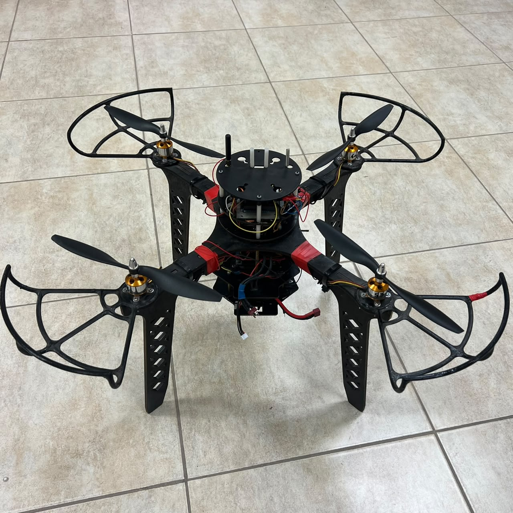

Graduation Project
Anti-Drift System & Digital Twin for Autonomous UAVs
Led a 7-member team to architect a 100 Hz MIL/SIL co-simulation platform bridging MATLAB/Simulink and Unity through a custom TCP/IP bridge, calibrating the digital twin with modelled sensor imperfections against live telemetry to close the sim-to-real gap. Verified control robustness through a 2³ factorial stress test against compounded wind, torque and noise disturbances.
Vertical RMSE1.44 cm
Propulsion Variance0.10 %
Co-Sim Rate100 Hz